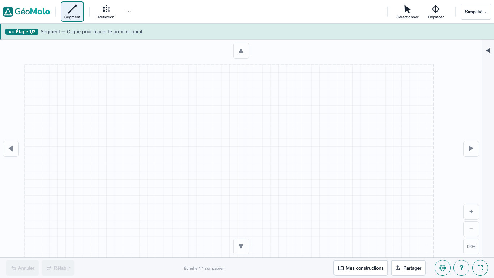
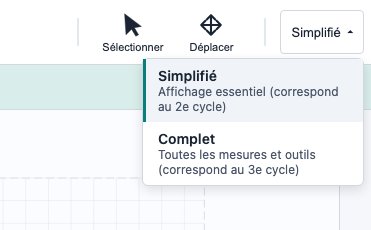
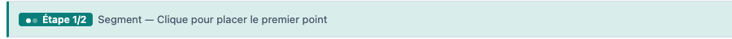
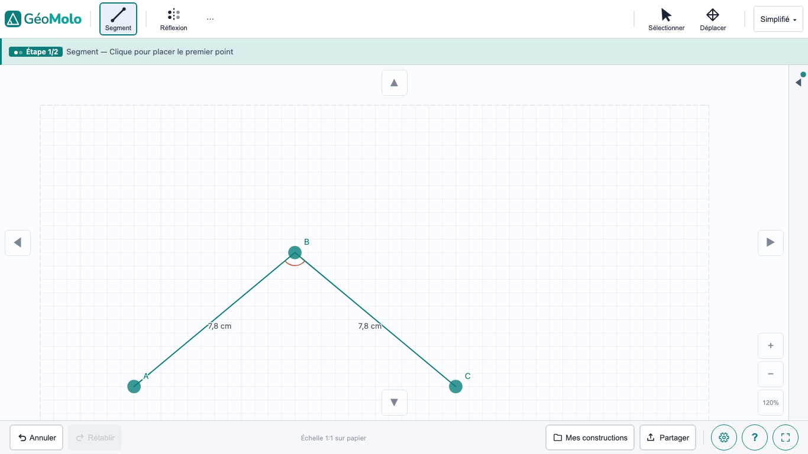
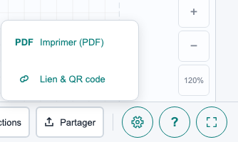
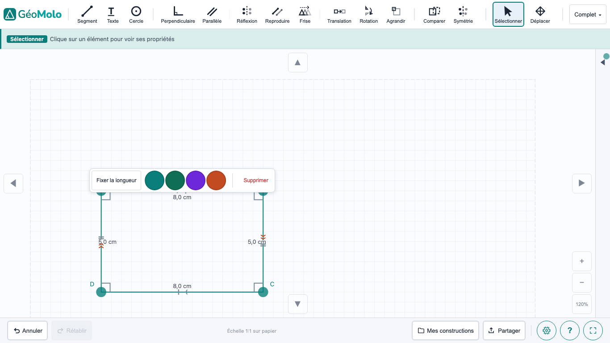
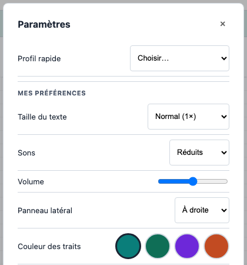

Ouvrir geomolo.ca dans Chrome, Edge ou Safari sur le Chromebook, l'iPad ou l'ordinateur de l'élève. Rien à installer. L'outil fonctionne aussi hors ligne après la première visite.

En haut à droite de la barre d'outils, un menu déroulant permet de choisir :
Le mode Simplifié affiche les angles par classification (aigu, droit, obtus), sans mesure en degrés, conformément au programme du 2e cycle. Le mode Complet ajoute le cercle, la translation, la rotation, l'agrandissement et le plan cartésien. Le mode peut être changé à tout moment.

À la première utilisation, un tutoriel en 4 étapes guide l'élève directement dans la barre de statut (la barre verte sous les outils). L'élève apprend à tracer un segment, annuler, retracer et supprimer, en environ 30 secondes, par l'action.
La barre sous les outils guide l'élève à chaque étape en langage simple :

L'élève n'a qu'à suivre l'instruction affichée.

L'élève ouvre le lien et voit la figure et la consigne. Il travaille directement dans son navigateur.

Masquer les propriétés (dans le panneau latéral Propriétés, à droite) : cache les propriétés détectées (parallélisme, perpendicularité, noms de figures). L'élève voit les segments et les mesures, mais doit identifier les propriétés lui-même.
Utilisation typique : évaluation des compétences en classification géométrique.

Mode estimation (dans Paramètres ⚙️ → Paramètres de classe) : cache toutes les mesures. L'élève estime d'abord, puis clique « Vérifier » pour comparer avec les vraies valeurs.
Utilisation typique : développement du sens de la mesure.
Dans Paramètres → Profil rapide, trois profils préréglés :
Avant la première utilisation par un élève ayant des difficultés, sélectionner un profil dans les Paramètres. Observer l'élève pendant les premières utilisations pour ajuster le profil au besoin.
